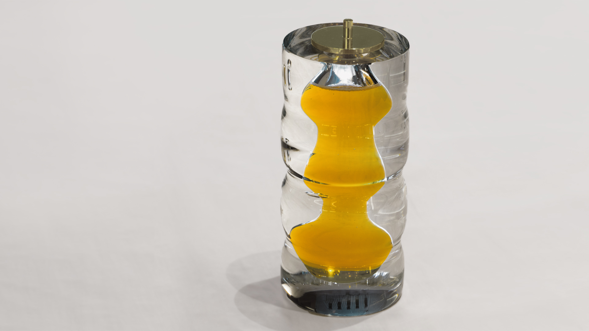
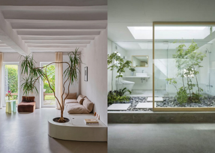
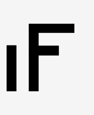
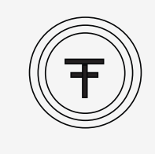
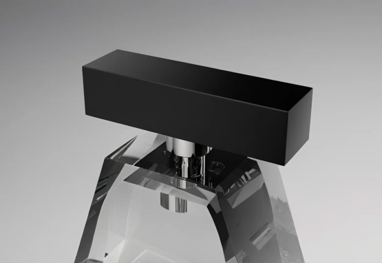
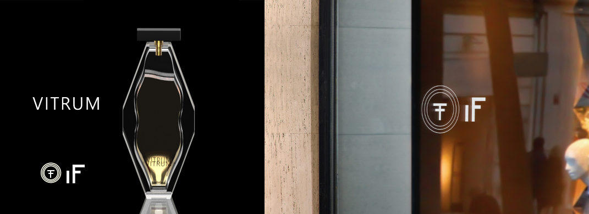

IF
IF es una marca en búsqueda de la belleza
y elegancia de las líneas y los materiales.
No solo nos enfocamos en los aspectos
visuales de los diseños, sino que también
desarrollamos diferentes formas para incluir
los cinco sentidos del ser humano, creando
una experiencia inmersiva y única, siempre
atentos al mínimo detalle.
Desde la fragancia hasta el frasco,
cada detalle es cuidadosamente medido y
perfeccionado, procurando una calidad y
experiencias únicas para cada momento.
Inspirado en las obras de Atsushi Shindo,
la botella es un reflejo de sus líneas
limpias y formas concretas, a la
vez que se experimenta con el vidrio,
creando un juego de luces en su interior
Es conocido por el juego dentro de
las propias figuras de sus creaciones,
por lo que se plasmó ese detalle en
el frasco, ofreciendo una experiencia
que va desde lo formal del exterior,
con sus líneas rectas y puras, hasta lo
experimental del interior, con formas
onduladas y suaves que invitan a tocar y
sentir el perfume desde otro punto de vista.
El logotipo final aúna la tranquilidad
de los círculos de los jardines zen y la
forma de las puertas torii, presentando
una oportunidad de abrir un nuevo
mundo de sensaciones, apoyada por
la calma y la reflexión.



